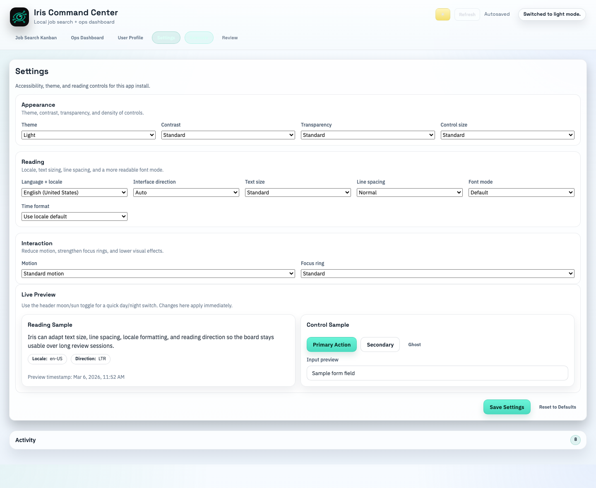

Iris Command Center Beta
A local-first job search operating system with AI-powered job discovery, kanban execution, Ops review, and a profile system that improves Scout over time.
Install
- Download the .dmg build.
- Open the disk image.
- Drag Iris Command Center Beta into Applications.
- Open the app from Applications.
This beta is not yet signed or notarized. If macOS blocks it, right-click the app in Applications, choose Open, or go to System Settings > Privacy & Security and click Open Anyway.
What it includes
- AI Job Scout for one-at-a-time job discovery
- Job Search Kanban for applications, follow-ups, and pipeline tracking
- Ops Dashboard for daily priorities and weekly review
- User Profile that strengthens Scout’s match quality over time
Preview
